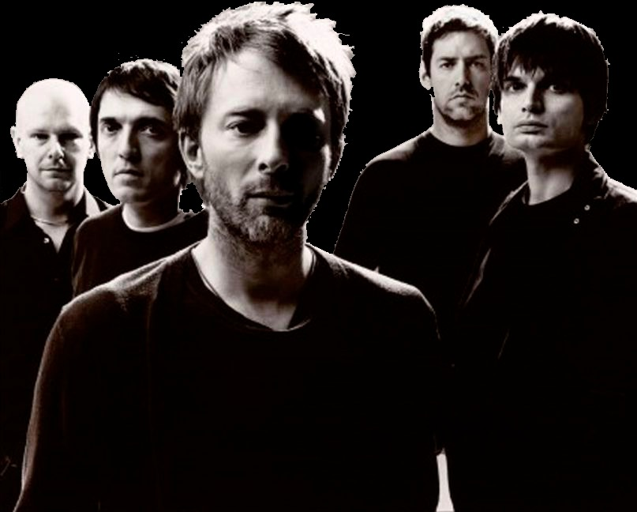

Radiohead are an English rock band formed in Abingdon, Oxfordshire, in 1985. The band consists of Thom Yorke (vocals, guitar, piano, keyboards), brothers Jonny Greenwood (lead guitar, keyboards, other instruments) and Colin Greenwood (bass), Ed O'Brien (guitar, backing vocals) and Philip Selway (drums, percussion). They have worked with producer Nigel Godrich and cover artist Stanley Donwood since 1994. Radiohead's experimental approach is credited with advancing the sound of alternative rock.
